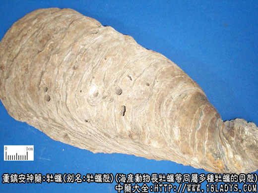

本品为较常用中药。始载《神农本草经》列为上品。
别名：牡蛎壳
来源：为海产动物牡蛎科长牡蛎等同属多种牡蛎的贝壳。
产地：全国沿海各地均产。
性状鉴别：壳呈不规则的片状、扁长圆形或扁卵圆形，大小不一，薄厚不等，小者长数厘米，大者可达50厘米，宽4～10厘米，厚1～4厘米。外表面灰色，稍凸起，显粗糙，层纹分明显波状。内面乳白色或杂灰色斑块，软平滑稍凹陷，微有光泽。壳顶层纹紧密，有凸起的脊和凹沟槽。质较坚重，不易破碎。断面白色，成层片状。气无，味微咸。
以片块完整，坚实不朽，内面有光泽者为佳。
主要成分：含碳酸钙80%～95%，并含磷酸钙、硫酸钙等，又含有机成分介壳精。
药理作用：益阴潜阳。作用原理为镇静、收敛、镇痛、解热。此外，还有软坚（使肿块消散或缩小）的作用。
炮制：煅后碾碎，或生用。
性味：咸、涩、微寒。
归经：入肝、胆、肾经。
功能：益阴潜阳，敛汗、涩精止带，化痰软坚。
主治：虚劳烦热、盗汗、遗精、崩漏、带下及瘰疬痰核等症。
临床应用：为治疗虚汗、化痰软坚的常用品。
（1）用于敛汗。治疗虚汗，无论肺结核盗汗或体弱自汗都适用，效果较确实，可单用12～15g，水煎，分两次服，或配黄芪、浮小麦、麻黄根等，方如牡蛎散。
（2）用于软坚。治疗瘰疬（如颈淋巴结炎等）、瘿瘤（如甲状腺腺瘤）、肋下痞块（肝脾肿大），作用原理尚未明了。治瘰疬常配玄参、浙贝、方如玄参牡贝汤（见玄参项下）；治甲状腺腺瘤配烟茜根、白茄根，方如烟白合剂；治慢性肝炎肝大作痛者，常配柴胡、青皮、夏枯草等，有镇痛作用。
（3）用于潜阳。治疗由肝阴不足、肝阳上亢而致的心烦、易怒、头晕、面赤、头部似有热气上冲、失眠、心悸、多见于高血压病者宜配龙骨、石决明、牛膝、钩藤等。因阴肾虚而有胸腹动悸、筋惕肉者，亦宜用牡蛎。
（4）用于收涩。治遗精、崩漏、白带等，常配龙骨、芡实、莲须、金樱子等。
（5）用于退虚热。无论阴虚骨蒸或温热病后余热未消，体虚汗多，均宜用生牡蛎，有存阴、涩大便和清内热的作用。《温病条辩》之一甲煎，即为湿热病后退虚热所设。
（6）治胃和十二指肠溃疡病，适宜于胃脘痛而有胃酸过多的患者。常用煅牡蛎等（研末）4.5～6g，配煅鸡蛋壳或煅石决明等分（研末），开水送服，每日3次。取其所含的碳酸钙有中和胃酸作用。
使用注意：
（1）本品生用镇静，软坚、解热的效力较好；煅用则涩而带燥，收敛固涩之力较胜。
（2）与龙骨比较，虽都能固涩，但牡蛎兼有软坚散结作用，而龙骨则无；龙骨长于安神，而牡蛎次之；虽都能止动悸，但牡蛎偏于止胸腹动悸，龙骨偏于止脐下动悸。由此可见，龙骨有其所长，牡蛎不能完全代替龙骨。龙骨、牡蛎合用，能加强潜阳和固涩作用。
（3）壮热脉实而无汗者不宜用。
（4）本品多服有碍肠胃，易引起便秘和消化不良，必要时宜配健脾药同用。
用量：入汤剂常用15～30g，治瘰疬甚至用到90～120g；先煎。粉剂每次用4.5～6g冲服。
处方举例：
牡蛎散（《三因极—病症方》）：煅牡蛎15g，黄芪12g，麻黄根6g，浮小麦18g，水煎服。
一甲煎（《温病条辩》）：生牡蛎6g，研细，清水8杯，煮取3杯，分三次温服。
附：牡蛎肉，又名蛎黄。味甘，性温。含糖原、多种氨基酸和维生素。药理试验、其粘蛋白能抑制单纯疱疹、乙型脑炎和脊髓灰质炎病毒。临床多用于阴虚和阳亢患者，可作食用佐餐。